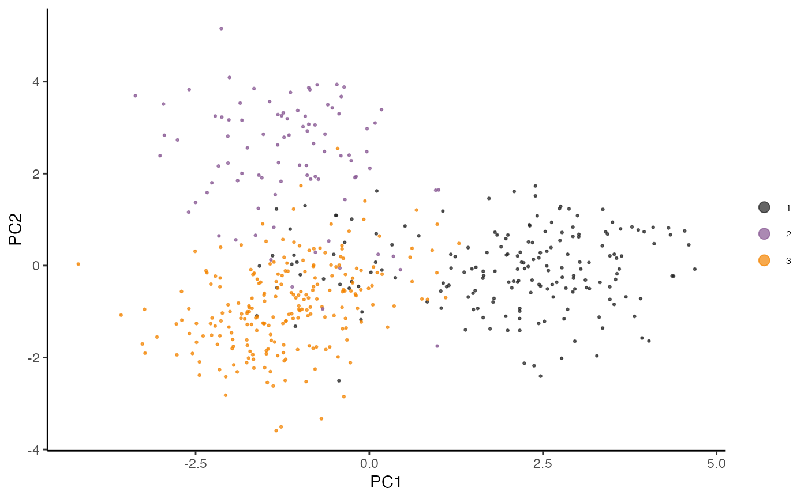

Plot dimensionality reduction assays
plotReduction(
bank,
reduction,
components = c(1, 2),
by = NULL,
type = c("discrete", "continuous"),
pt.size = 0.5,
pt.alpha = 0.7,
col.midpoint = NULL,
col.low = "blue",
col.mid = "gray95",
col.high = "red",
col.discrete = NULL,
main = NULL,
main.size = 5,
legend = TRUE,
legend.text.size = 6,
legend.pt.size = 3
)BanksyObject
reduction to visualize
which components to visualize
groupings for cells
type of groupings (one of 'discrete' or 'continuous')
size of points
transparency of points
for continuous labels - midpoint of color gradient
for continuous labels - color gradient low
for continuous labels - color gradient mid
for continuous labels - color gradient high
for discrete labels - colors for groupings
title
size of title
show legend
size of legend text
size of legend point
Dimensionality reduction plot
# Generate a simulated dataset
d <- simulateDataset()
bank <- BanksyObject(own.expr = d$gcm, cell.locs = d$locs, meta.data = d$meta)
bank <- NormalizeBanksy(bank)
bank <- ScaleBanksy(bank)
bank <- ComputeBanksy(bank)
#> Computing neighbors...
#> Computing neighbor matrix...
#> Done
bank <- RunPCA(bank, lambda = 0.2)
#> Running PCA for lambda=0.2
names(reduction(bank))
#> [1] "pca_0.2"
plotReduction(bank, reduction = 'pca_0.2', by = 'Label', type = 'discrete')
